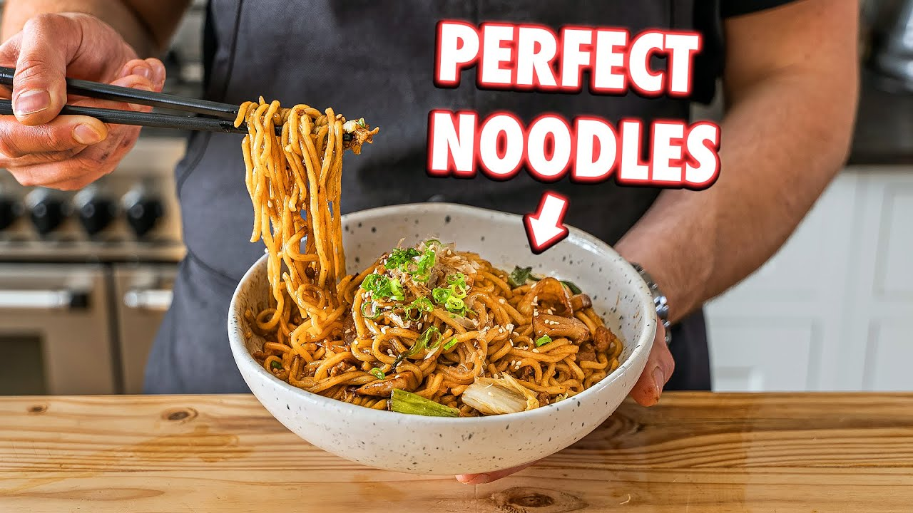

Yaki Udon

By Joshua Weissman
Homemade stir fry noodle recipes like yaki udon will be a revolutionary moment
for many people who are just about to start cooking, or already cooks. It's a weeknight and a weekend meal
Ingredients
Yaki Udon Noodle Sauce
- 2 tablespoons dark soy sauce -29g
- 2 tablespoons oyster sauce - 28g
- 1 tablespoon mirin - 14g
- 2 tablespoons shirodashi -24g
- 1 tablespoon rice wine vinegar -12g
- 1 teaspoon palm sugar - 35g